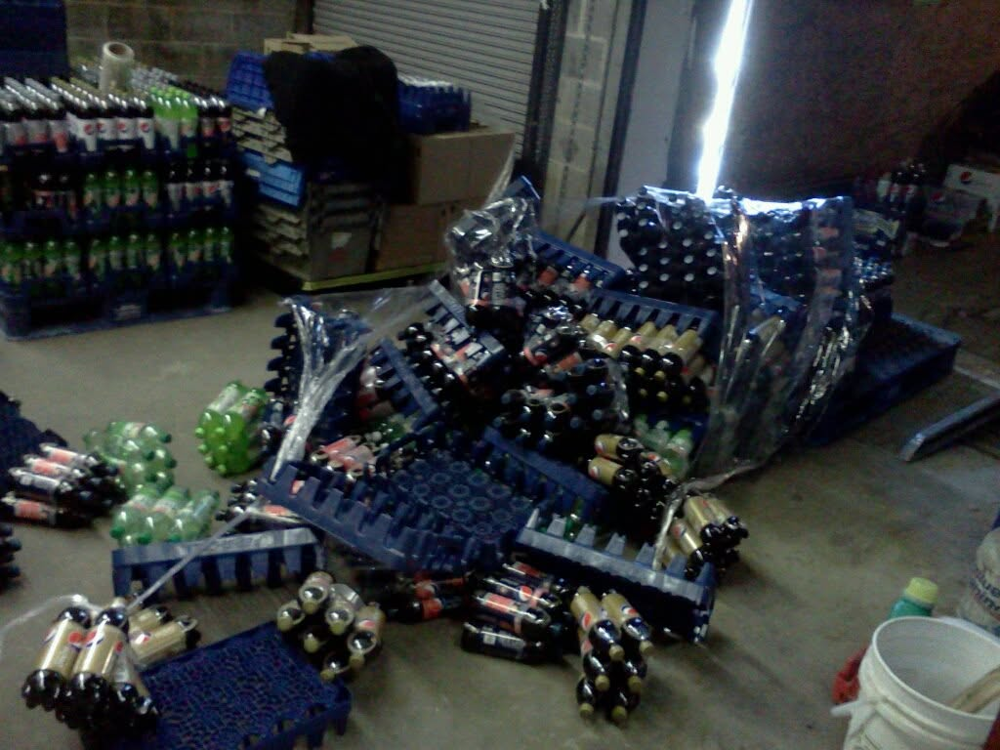
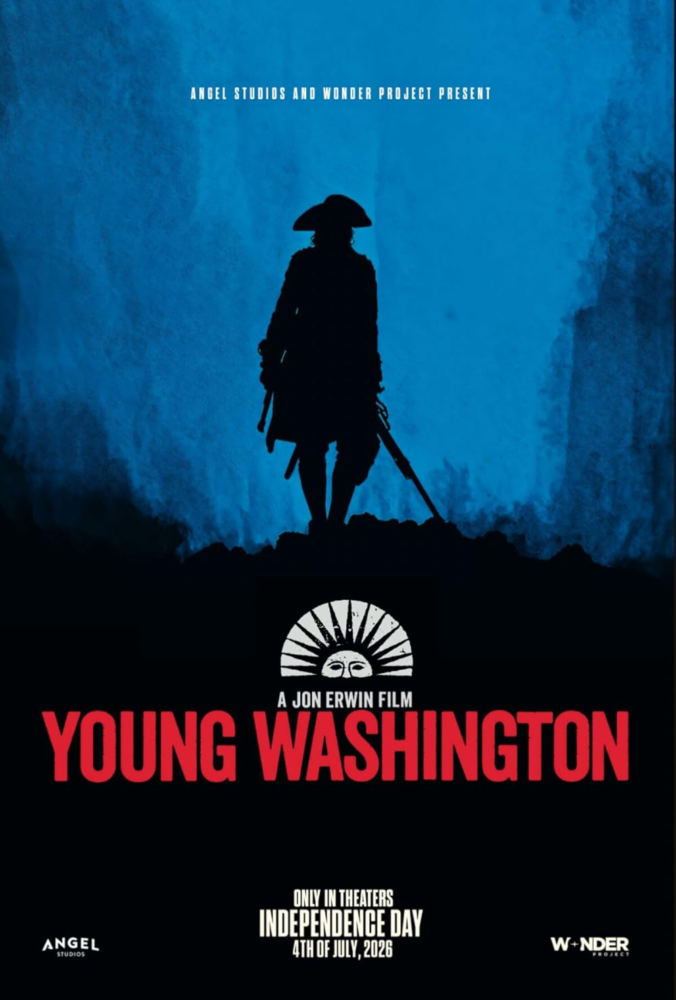

Captains Log

July 3rd 2026
Work Holiday
The 4th of July falls on a Saturday this year, tomorrow. Due to that work gave us the 3rd off. Normally we have the 4th and 5th off, so we got the 3rd and a floating holiday. I'll take it! I have worked a lot of bad or hard jobs or not a lot of pay in the past, so days like this really remind me how privileged I am.
I feel like that falls on deaf ears a lot at work. It seems anecdotally that people who work in offices either never had to work more blue collar jobs, or they quickly forget how rough it is out there in those blue collar fields. I was 25 when I went to college and 29 when I graduated. In fact I have to work my office job for another year to have an equal amount of time doing white collar work vs blue collar. My point being I distinctly remember working holidays, weekends, and evenings so I could be full time. When I was in college I worked as a merchandiser for Pepsi and that was exclusively working holidays, weekends and evenings.
Old Pictures at Pepsi

Young Washington
Katie showed me a trailer for a movie I had never heard any hype or anything about yesterday. It was for Young Washington, which immediately made me think of the movie, young Frankenstein. We watched the trailer and I was instantly excited for that. I really enjoy history, and have since I was a kid, though I didn't know it at the time. I have been listening to a pod cast called "History That Doesn't Suck" recently and I heard for the first time the story of a younger George Washington.
It's funny because in school they talk about George Washington, as he was a founding father and the first president, but they don't really talk about when and how he became a General. If you do hear anything about Washington prior to the Revolution it's about him and the cherry tree. HTDS however really laid out information about his early life and hist first military excursions, which is what this movie focuses on.
It was made by Angel studios, who made the movie "Run, Hide, Fight" which I also really liked. Maybe it's a sign of my age, but I appreciate the messages they are relaying in their films. This one in particular makes the audience proud to be American and proud of our history. I think that's refreshing today. I know that a lot of the founding fathers and early US figures participated in slavery; and that is terrible; but I don't think we should downplay the weight and scope of what they did and the things they accomplished.
Anyway, the movie was fantastic and I thoroughly enjoyed it. I will not however go to the movie theater in Monaca again. There was no air in that room. We are in the midst of a heat wave, and that room had no air. It really detracted from my enjoyment.
